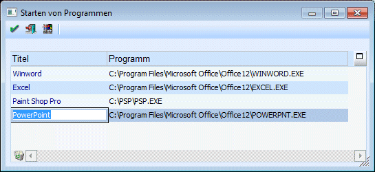
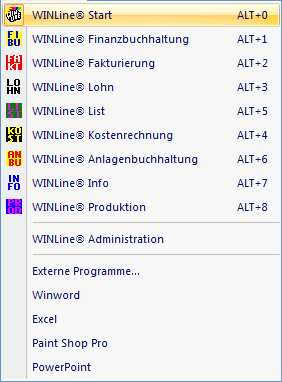

Im Menüpunkt
1 Applikationen
1 Externe Programme
können die in diesem Menüpunkt hinterlegten Programme direkt aus der WinLine aufgerufen werden.
Es können alle ".exe-Programme" eingetragen werden. In der Spalte Programme, wird der Pfad des Programms hinterlegt.

Um eines der im Menüpunkt "Externe Programme" aufzurufen stellen Sie den Cursor auf das gewünschte Programm und Drücken den Microsoft Windows-Button oder wählen Sie das Programm aus dem Menüpunkt Applikationen aus. Danach gelangen Sie automatisch in das jeweilige Programm.
Durch Anklicken des Löschen-Buttons wird der aktive Eintrag gelöscht.

Alle so hinzugefügten Programm werden im Menüpunkt Applikation und in der Tools-Buttonleiste (für jedes der ersten 10 Programme wird ein Button freigeschalten) angezeigt und können auch von dort aus gestartet werden.
Neben anderen Programmen können auch Makros über diesen Menüpunkt aufgerufen werden.
In der Spalte, wo man normalerweise das Verzeichnis des Programms einträgt, wird bei einem Makro folgendes eingetragen:
MACRO:XXX (XXX steht für den Namen des Makros)
Das Makro kann nun wie die externen Programme entweder über den Menüpunkt
1 Applikationen
1 Makroname
oder über den Ribbon "INFO CENTER UND MAKROS" aufgerufen werden.